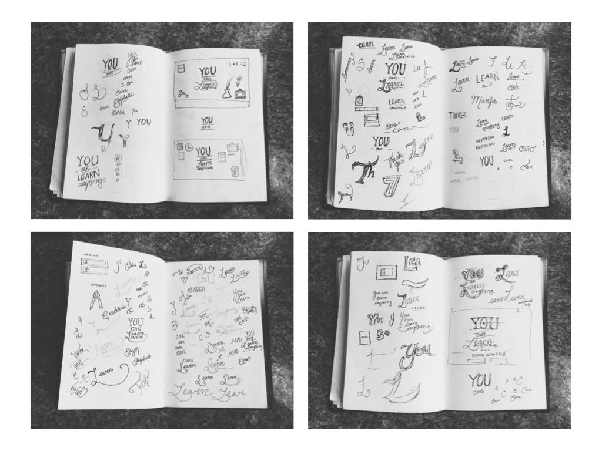
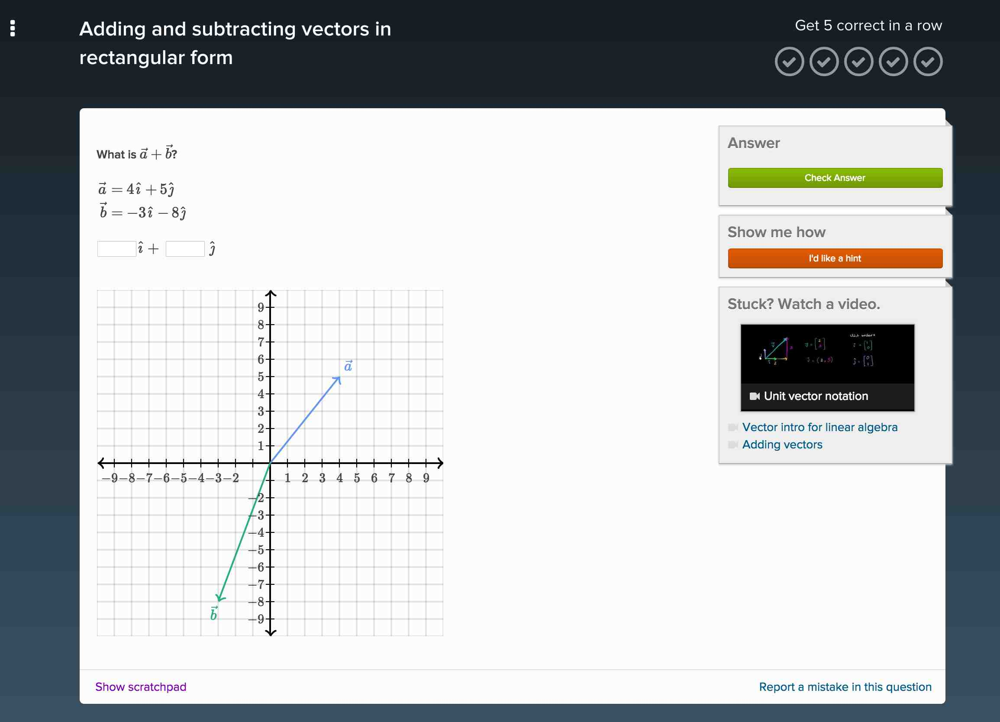
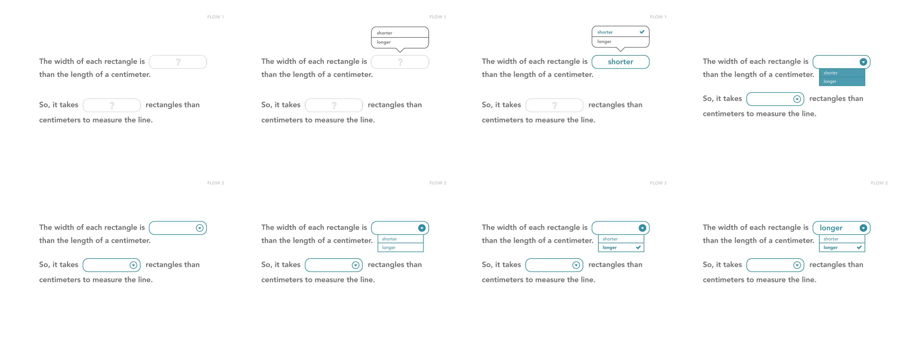
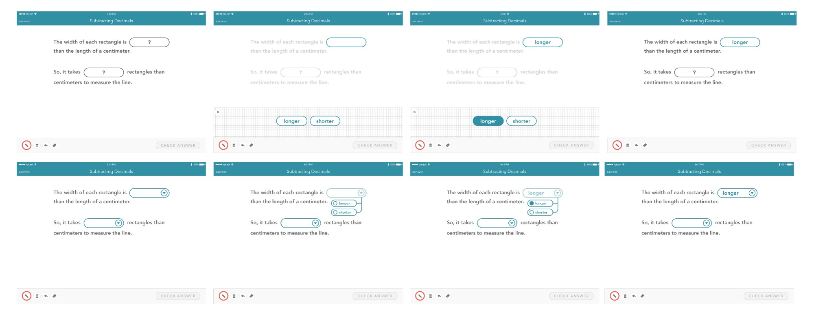
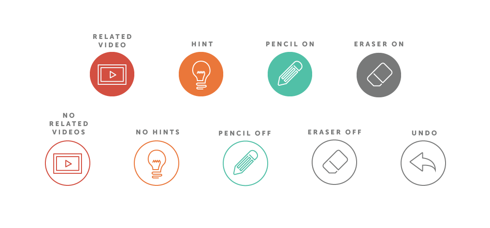

Internships
Khan Academy
This past summer, I was fortunate enough to be a Product Design intern on Khan Academy's iOS team. Over the course of three months, my team launched math exercises onto the iPad app. Because Khan gives interns a great deal of autonomy, I also had the opportunity to lead design projects outside the iOS team. These projects ranged from revamping the interns recruitment page to creating invites for intern tea time. Below, you'll find details about my internship.
iPad User Onboarding
My favorite aspect about the internship was the freedom I had to create my own projects. If I wanted to make a change or add a feature, I could take charge—all I had to do was ask! One of the projects I led was the iPad onboarding experience. Because this was a drastic update, we wanted to emphasize a few things:
- You can learn anything. Khan Academy isn't just about learning algebra and geometry. There are lessons in more than 50 different subjects including economics, art history, and chemistry.
- Exercises exist now. Before, the iPad app was simply a library of videos. We wanted to draw attention to the exercises that would now supplement these videos.
- Logging in saves progress. Users do not have to log in to access content on the app. However, logging in allows students to start where they left off, creating a more personalized experience.
Initial Sketches
I wanted to practice illustration, so I made it a point to design an experience that was illustrative in nature. Looking at the list of goals, I decided to tackle "You can learn anything" first. The blog Things Organized Neatly inspired me to create a welcome illustration with every Khan Academy subject in an organized way. Take a look at some of my very messy sketches! (And yes, there may be some hidden ampersands.)
Iterations
After brainstorming, I continued by creating wireframes and mockups in Illustrator. I began with a grayscale palette using solely rudimentary geometric shapes. Then, if I liked the wireframe, I would add color and content. The idea was to have the user swipe through these screens before they logged in. Some iterations featured a walkthrough tutorial while others showcased new features.

User Testing
With these iterations, I chose two concepts to prototype in Keynote. This first prototype walks through the new features, followed by the user log in.
The second prototype takes a much more winded approach. The user is first prompted to log in. Afterwards, they get the option to complete a tutorial about the exercise experience. This tutorial is a simplified, playful version of the actual interface. I didn't want to overwhelm the user with an overview of all the new features at once. My goal, instead, was to get the user excited about Khan Academy.
Every Friday, my product manager (@wahl) would invite a group of students in for user testing. I brought both of these prototypes to one of these sessions where the students were between the grades of 5-7. For each student, I walked through both prototypes. At the end of each walkthrough, I asked them what knowledge they gained from the onboarding experience. Most students brought up at least 1 of our 3 goals. They also enjoyed the second prototype's tutorial, but felt that the process was too long.
The Last Prototype
Using my knowledge from the user testing, I decided to make some edits to my first round of interactive prototypes. Aside from making the process shorter, I also made tweaks to maintain a consistent design language across the mobile and desktop experience. More specifically, the login module now shares the same rounded corners and button styles as the online interface.
If you download Khan Academy on your iPad, you'll notice that the shipped onboarding design is fairly similar, but has changed a little in order to reflect the style of the rest of the app!
iPad Math Exercise UI
My summer-long project was to redesign different exercise types for the iPad interface. Previously, math exercises had only existed in the browser:
This project was challenging because of the large variety of exercises. Khan Academy offers a wide spread of math topics from basic arithmetic to linear algebra. Due to the breadth of material, Khan had to support exercises ranging from multiple choice to direct graph manipulation. My mission was to take these exercises and create a cohesive experience tailored for the iPad.
Multiple Choice
My first task was to redesign multiple choice exercises. On desktop, these problems appear as a set of radio buttons. Although radio buttons work well for the dexterity of a cursor, they are far too small for a touch screen device.

For my initial pass, I created some quick mocks in Illustrator. The idea was to create button-like inputs with whimsical animations.

With these static mocks in hand, I translated them into interactive prototypes using HTML, CSS, and JavaScript.

I also modified this prototype to work for multiple select exercises (checkboxes).

Dropdowns
I tackled dropdowns using a similar process. In these iterations, I wanted to mix the default iOS pattern with the multiple choice aesthetic.
None of these designs felt right to me. They all looked "off" for one reason or another, so I decided to start from scratch. This time, I ignored the default iOS dropdown pattern, and instead tried to maintain a consistent style.
I chose a couple of designs to explore with interactive prototypes. This first Keynote prototype mimicks the handwriting answer area of the single text inputs.
The second one is based on a classic dropdown, but styled like the multiple choice exercises from before. Compared to the previous prototype, this "inline" style gives better context for the answer.

Take a look at app, the shipped experience was very close to this one! Aside from multiple choice and dropdown exercises, I also had the chance to play around with single text and expression inputs.
The Little Details
I also worked on a random assortment of small things for the iPad release.
Loading an Exercise
Previously, loading an exercise was a simple spinner in the center of the screen. Instead of letting this time go to waste, I created a loader that explains how you have to get "5 in a row" before advancing to the next topic. In the final iteration, we also added little motivational quotes about the growth mindset.
Showing Progress
When a student gets a correct answer, a green circle rolls onto a "conveyor belt". When a student takes a hint or gets an incorrect answer, a gray bubble also rolls onto the conveyor belt. This way, students feel like they are making progress even if they get an incorrect answer!
Iconography
Some Other Highlights
- Redesigning the team page and intern recruitment page with intern Peter Gao
- Leading a design workshop with the lovely @telogram
- Creating a t-shirt design for college recruitment
- Chatting over tea with the interns every Friday.
- Weekly design crits with the design team
At the end of the internship, I made this lil animation about my time there. Apologies in advance for the whispering narration. I was recording in a room at the office and I didn't want to be heard!
S/O to my amazing mentor @nsfmc and the rest of the mobile team for an amazing summer! Definitely check out my fellow intern, Kasra's post about his internship.